第一版人审50/100后的返工。原角色／只有真实形体／单源／混合以同场、同角度对照。3×来自实际游戏画面，不加检视灯；上方大图为960×640实际尺度。
胸背前屈、头前探、肩差、实体脊与厚膜；满同化覆盖以整个角色可见面计算。肩灯位置随身体变化，场景依真实灯位重新受光。尚为独立美术打版，攻击、坐姿及正式来源存档不在此次范围。
实景录制：同化加深 → 晶纤 → 破膜 → 混合 → 疗愈。
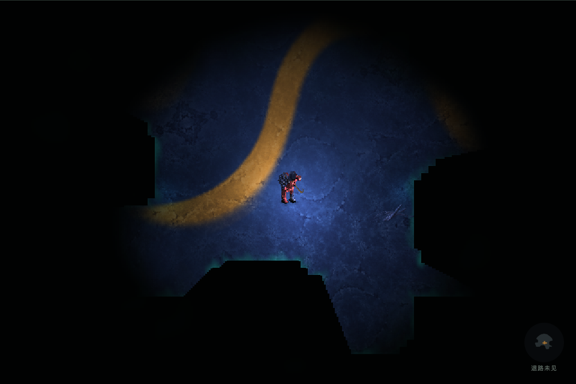
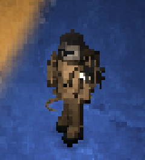
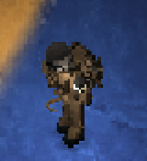
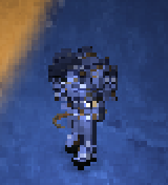
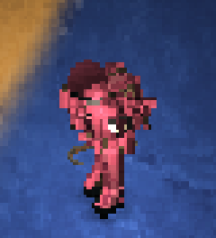
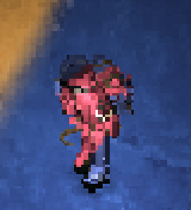
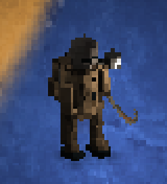
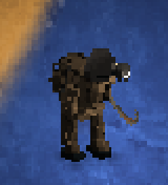
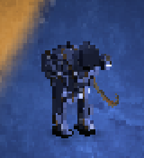
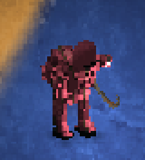
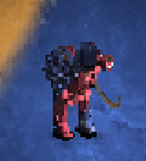
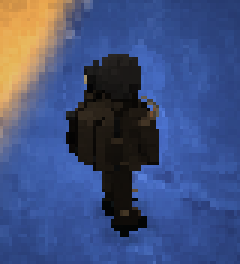
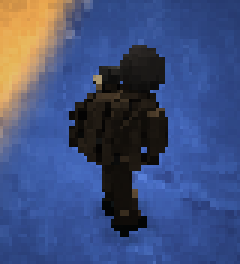
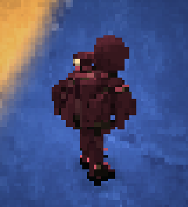
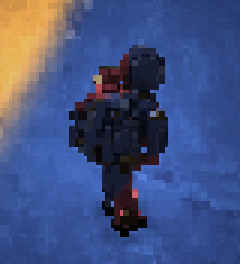
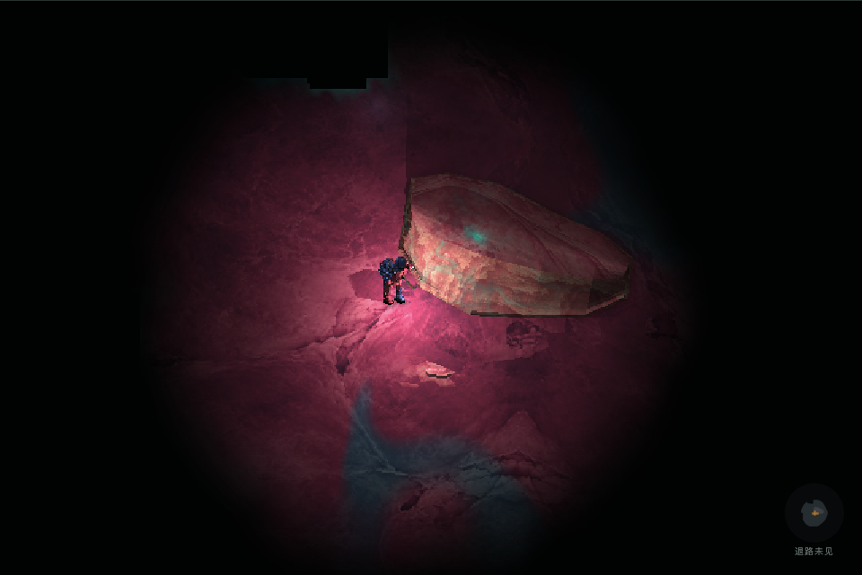
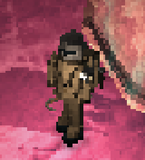
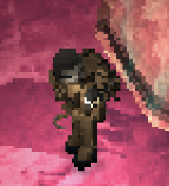
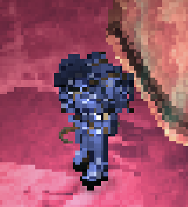
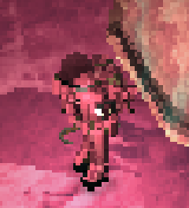
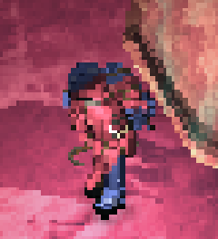
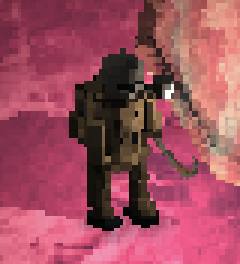
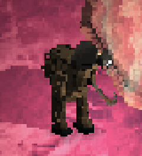
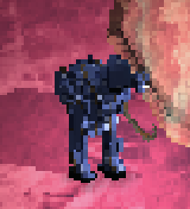
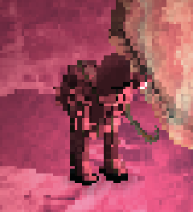
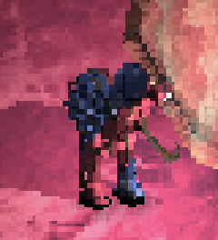
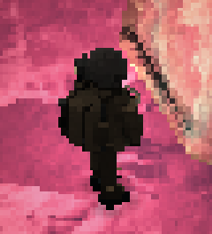
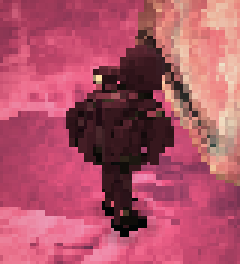
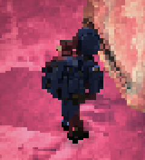
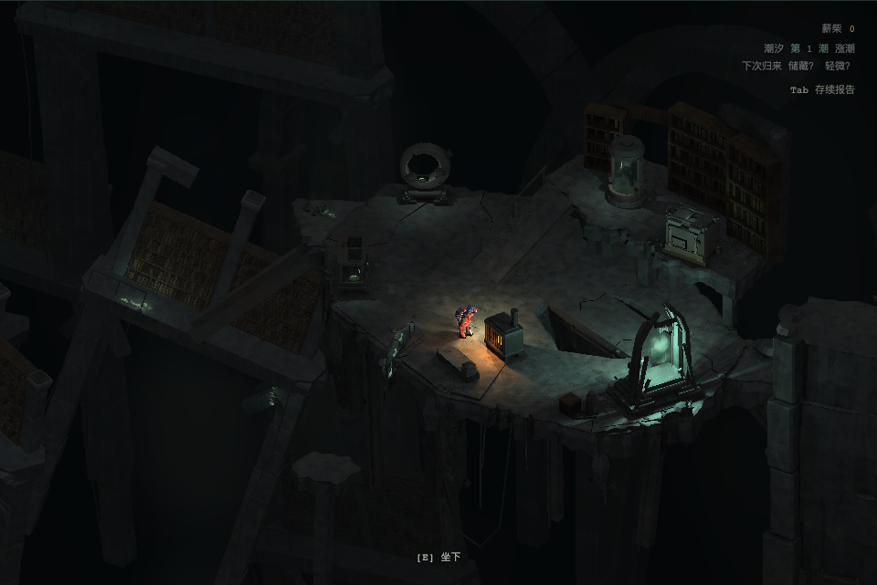
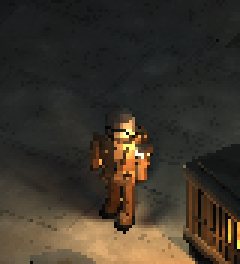
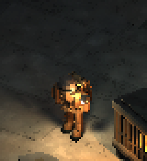
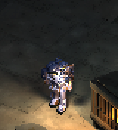
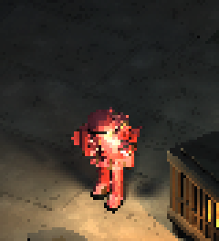
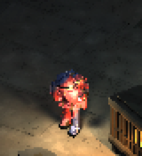
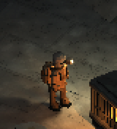
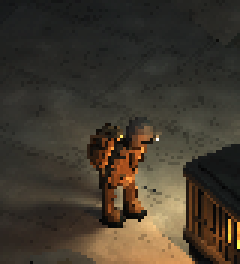
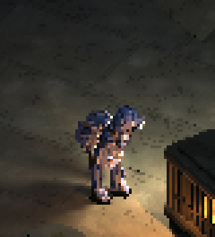
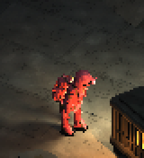
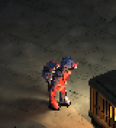
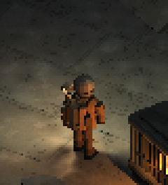
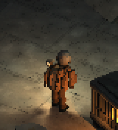
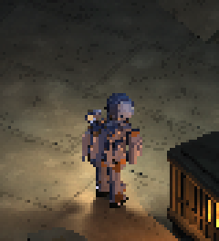
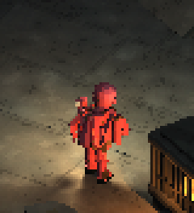
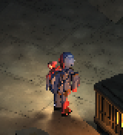